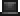

1. Frog Ammo (ammunition) - it can be used by 'Frog Gun' or a 'Stake Launcher'
Ingredients:
at:
1x Frog
Ancient Manipulator
1x Top Hat 
Result: 100x Frog Ammo
2. Frog Gun (weapon) - it uses 'Stakes' as ammo. Deals 250 damage and has a 25% chance to drop from Duke Fishron, or 1/512 chance to drop from frog
and 100% chance to drop from golden frog